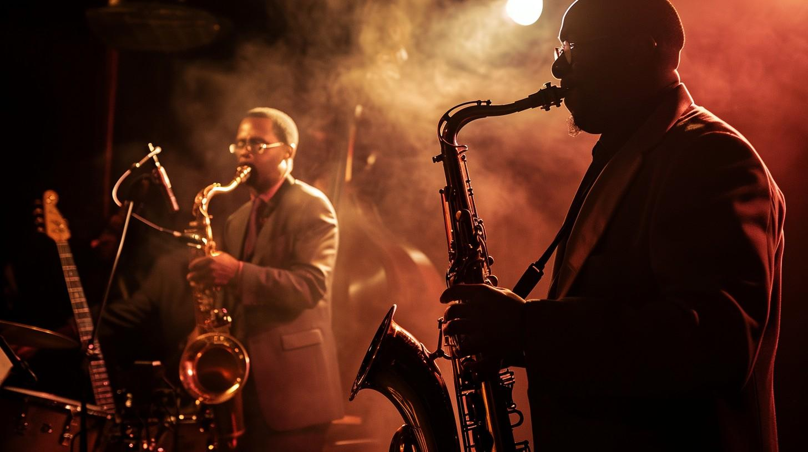

Marco Carro Peyper - 2º SMR
Actividad 14: Transiciones
Requisitos de finalización
Para mejorar el efecto logrado en el ejercicio anterior, el siguiente paso será lograr que los giros que se producen al poner el puntero del ratón sobre la sección, o retirarlo, se produzcan de forma suave en ambos casos.
El movimiento comenzará y terminará suavemente, y durará un segundo cada vez.
Una noche inolvidable.

Llena de música que te hará bailar.